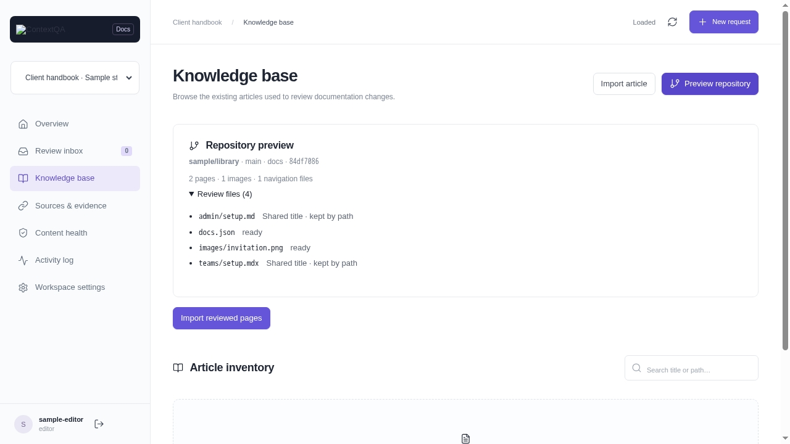
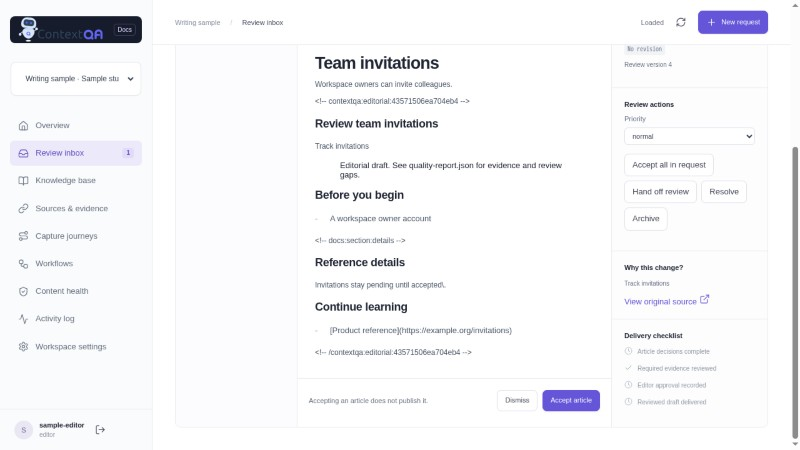
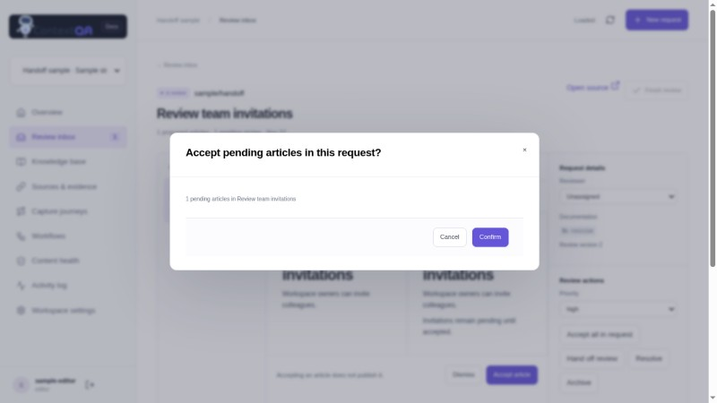
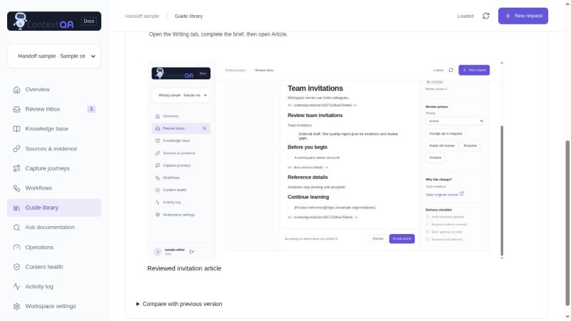
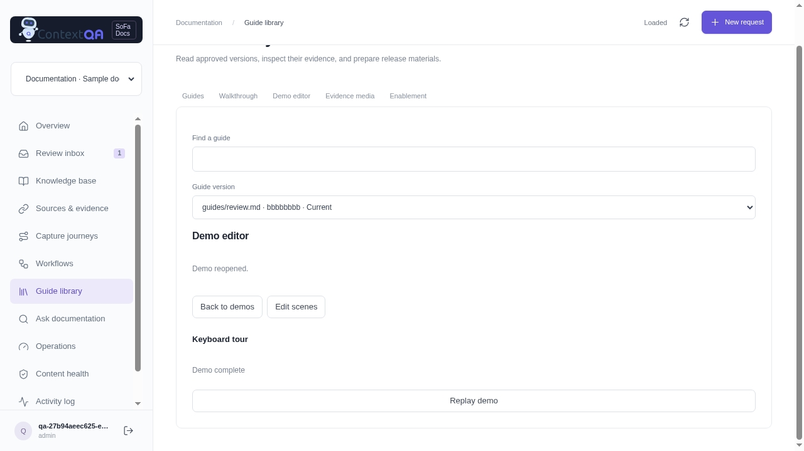

SoFa Docs product walkthrough
Follow a documentation change from an existing article through review, then turn an approved guide into a lesson or an interactive demo. Each chapter uses screenshots and video from a recorded Ship 5 example in an isolated workspace.
Import existing guides
An administrator connects the documentation repository, branch and directory in Workspace settings → GitHub. An editor then opens Knowledge base.
- Select Preview repository. Check the branch, directory and commit, then expand Review files. Two pages can share a title. Use the file path to identify the right one.
- Select Import reviewed pages. Read the counts on the import receipt. Open a page in Article inventory to inspect its source version.

Watch the recording · Import existing guides
Write a change
Use an invitation policy as the example. Start with an open request in Review inbox.
- Open Writing, check the proposed article path, then choose Reference. Enter the reader, goal, prerequisite, source and supported fact. Here the fact is “Invitations stay pending until accepted.”
- Select Save partial answers and Generate draft. Read the proposed Article and open Changes to see which words the reader would gain or lose.

Watch the recording · Write a change
Review and hand off
As the reviewer, open the request and compare Changes with Evidence.
- Choose Accept article for one article or Accept all in request for the pending set. Read the count before selecting Confirm.
- Open Review actions → Hand off review, choose an editor, add a note and select Send to inbox. Look for Ready for approval. If the handoff is blocked, resolve the outstanding article decisions and retry.

Watch the recording · Review and hand off
Read a guide and export a lesson
Start with an approved edition. The invitation guide in the recording was seeded with a screenshot from the writing run.
- Open Guide library, choose the Current version and read the illustration beside the step. Open Evidence media to find the source journey, run and step.
- In Enablement, choose the audience and Training lesson → Generate material. Review and approve the lesson, select Export material and open the Markdown and its image in the downloaded archive.

Watch the recording · Read a guide and export a lesson
Create a demo
Start with a guide edition that contains screenshots for the scenes you want to show.
- In the demo editor, choose the edition, enter a title and select Create demo. Choose Add hotspot, give the action a label and place it on its target. Use percentages for precise placement.
- Choose Move earlier or Move later, select Save demo, then Back to demos. Reopen the title and select Preview demo. Follow the hotspots to Demo complete.

Watch the recording · Create a demo
Where are my workspace’s screenshots?
In Guide library, select the article path and edition, then open Evidence media. Check that the journey, run and step match the illustrated action.
If the library only contains a sample guide, open Capture journeys and check that a plan is available for your app and environment. A new edition needs a completed capture, reviewed media and an approved guide. A GitHub code analysis result alone supplies no reader screenshots.
Open Guide library